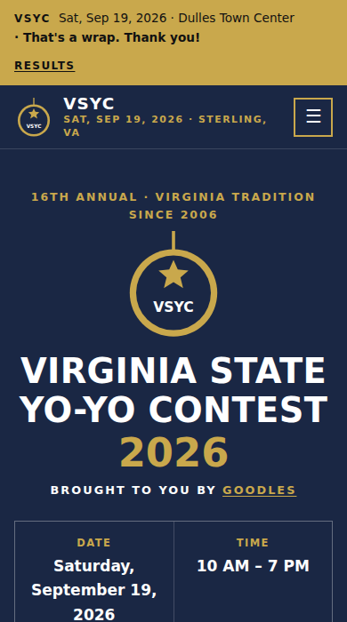
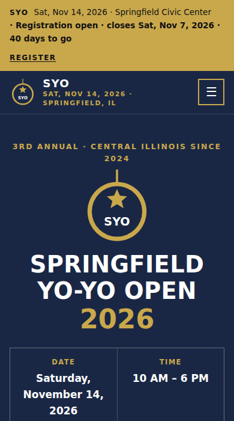
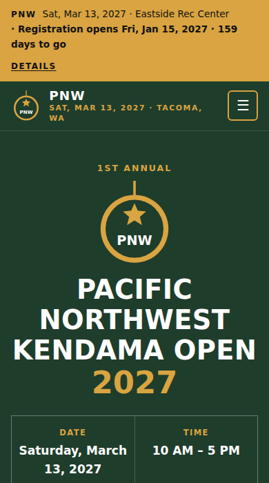
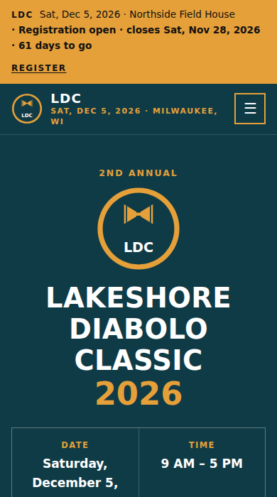
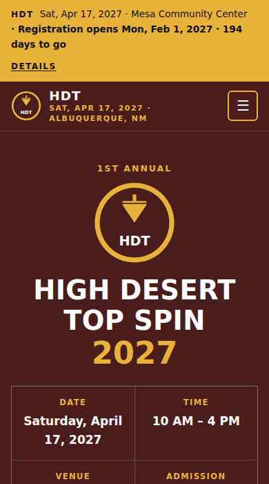
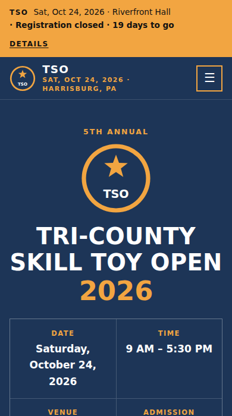
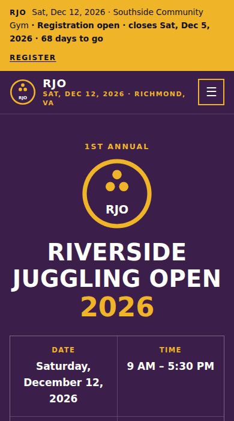
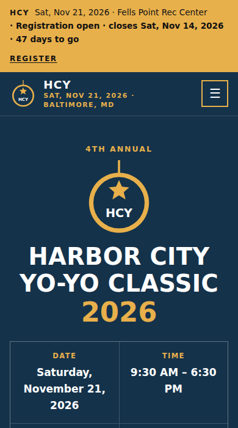
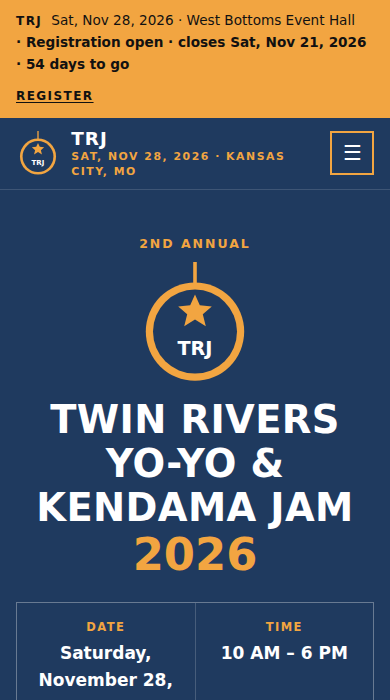
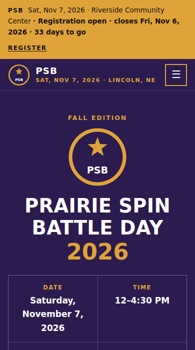

Free • Open source • No coding
A website for your skill toy contest
Divisions, schedule, rules, venue, sponsors, and results, from one settings file. The site follows your contest's calendar by itself: "registration opens soon", then the register button, then "registration closed", then "today!", then a "that's a wrap" page with your results. GitHub builds and hosts it for free.
Use this template See examples
- $0hosting on GitHub Pages
- 1 fileto edit: site.jsonc
- 5 stagesthat switch over by date
See It in Action
Every example below was built by this template from one settings file. Click to explore the full site.

Real contest VSYC-26 Sterling, VA • after the contest, with results
Demo Yo-Yo Contestyoyo-contest preset, registration open

Demo Kendama Contestkendama-contest preset, registration opens soon

Demo Diabolo Contestdiabolo-contest preset, registration open, combo price

Demo Spin Top Contestspintop-contest preset, longest spin and ring battles

Demo Skill Toy Contestskill-toy-contest preset, a division for every toy

Demo Juggling Contestjuggling-contest preset, team routines, numbers, and a battle

Demo Yo-Yo AP & Doublesyoyo-contest preset plus AP, Doubles, and 1A prelims and finals

Demo Yo-Yo & Kendama Combo Two contests, one sign-up: ladders, Duo, and audience-voted duels
Demo Trick Battletrick-battle preset, any skill toy
VSYC-26's settings are in examples/vsyc-26.jsonc. The contest's own hand-built pages are at dmvthrowers.club/vsyc26. The demos rebuild every day, so their stages move with the calendar.
Deploy in 4 Steps
You need a free GitHub account. Everything happens in your web browser.
-
Copy the template
Click Use this template → Create a new repository. Name it (e.g.
springfield-open), keep it Public, and click Create repository.1 minute
-
Turn on GitHub Pages
In your new repository: Settings → Pages → Source → GitHub Actions. That's the only setting.
1 minute
-
Fill in your contest
Open
site.jsonc, click the pencil icon, and work top to bottom: date, venue, registration dates and link, fees, sponsors. Every line has a note. Click Commit changes.20–40 minutes
-
You're live
Open the Actions tab and wait for the green check. Your site is at
https://YOUR-NAME.github.io/YOUR-REPO/. After the contest, add your results.1 minute
What you edit
One file, site.jsonc. The preset fills in divisions, rules, scoring, FAQ, and terms.
{
"preset": "yoyo-contest",
"contest": {
"name": "Springfield Yo-Yo Open",
"edition": "3rd Annual",
"date": "2026-11-14",
"start": "10:00", "end": "18:00",
"admission": "Free to spectate"
},
"registration": {
"opens": "2026-09-15", "closes": "2026-11-07",
"url": "https://your-signup-form"
},
"venue": { "name": "Springfield Civic Center" }
}Or let an AI agent do it
Paste this into Claude Code or another coding agent after step 2:
Set up my contest's website from this repository.
Read AGENTS.md first. Ask me for our preset, contest
name and edition, date and hours, venue, registration
dates, sign-up link, fees, divisions, schedule,
sponsors, and contact email. Edit site.jsonc only,
run the build and the check for each stage with
--today, fix every warning, then push to main and
confirm the GitHub Pages site is live.The agent instructions in AGENTS.md keep it to your facts and competitors' privacy.
Pick Your Preset
| Preset | For | Comes with |
|---|---|---|
yoyo-contest | A yo-yo contest (default) | 1A, X Division, and Sport divisions; NYYL freestyle rules and a scoring explainer; music upload steps |
kendama-contest | A kendama contest | Beginner, Intermediate, and Open trick ladders with their trick lists, plus a battle bracket with a 3rd-place match |
diabolo-contest | A diabolo contest | Single Diabolo, Multi-Diabolo styles (2D, 3D+, Vertax, fixed axle), Beginner to house music, and a trick ladder; ceiling and toss safety rules |
spintop-contest | A spinning top contest | Trick Freestyle (string and hand-spun styles), Junior Tricks (12 and under), Longest Spin, and Ring Battle |
juggling-contest | A juggling contest | Individual Freestyle and Team Routine (2–6 players) with panel criteria, Numbers Endurance (catches, best of 3), Juggling Battle (last one juggling), and a Showcase; prop safety rules |
skill-toy-contest | A mixed contest with several toys | A division for each toy: yo-yo, kendama ladder, diabolo, spin top, open skill toy, plus Artistic Performance, a Showcase (not judged), and a beginner division for any toy |
trick-battle | A casual club battle or skill toy jam | Beginner, Open, and Kendama brackets; side games; simple battle rules |
Running a club, not a contest? Use the sister template, yoyoclub-template.
What's Included
- 9 pages: Home, Schedule, Register, Rules, Venue, Sponsors, Results, FAQ, Terms
- A site that follows the calendar: registration opens and closes, a countdown, contest day, and "that's a wrap", rebuilt daily
- Divisions & fees: any number, with styles, age limits, combo prices, and music only where it's needed
- Every format explained: freestyle, panel judging with a criteria table, timed or scored events, trick ladders with their trick lists, battle brackets (judges or an audience poll), showcases, team entries, and prelims → finals
- Rules & scoring explained in plain English, with sources
- Sponsors by tier, partners and friends, and sponsorship packages with slots
- Results: podiums by division, stats, and links to standings, photos, and video
- Venue facts, vendor rules, photos, and hotel room blocks
- Competitor terms: refunds, waiver, photo release, conduct, and minors
- Found on Google, works on every phone, and private: no cookies, trackers, or outside fonts
Questions
Does it handle registration and payments?
No. The site links to whatever sign-up you use: a Google Form, a Stripe payment link, Eventbrite, or your own app. The Register button appears and disappears on your dates.
What happens after the contest?
The day after, the home page switches to "that's a wrap" with your wrap-up numbers and links. Fill in the results section of site.jsonc and the Results page shows each division's podium.
Do I have to use NYYL rules?
No. The yoyo-contest preset starts from them because most U.S. yo-yo contests do. The diabolo, spin top, and mixed presets use a simple, typical judging sheet instead. Copy the rules section into site.jsonc and write your own.
Are the terms legal advice?
No. They're a plain-English starting point from a real contest. Have someone check them against your venue's requirements and local law.
Why is this separate from the club template?
Clubs and contests rarely share the same organizers, dates, or audience. Two small templates are easier to run than one big one.
Is it really free?
Yes. The template is public domain, and GitHub Pages hosts public sites for free.